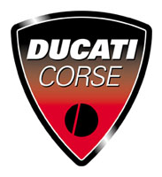

두카티 DUCATI
두카티(Ducati)는 이탈리아 볼로냐에 본사를 둔 고성능 오토바이 제조 브랜드이다.
최종 업데이트

두카티는 어떤 브랜드인가
두카티는 1926년 7월 4일 이탈리아 볼로냐에서 카발리에리 두카티 형제가 라디오 부품 회사로 출발했다. 제2차 세계대전 이후 1946년 쿠치올로 보조엔진을 계기로 모터사이클 제조로 전환했고, 2012년 아우디 자회사 람보르기니에 인수되어 폭스바겐그룹의 일원이 되었다.
현재 볼로냐 보르고 파니갈레에 본사를 두고 2024년 매출 10억 유로를 넘기며 연 5만여 대를 인도하는 프리미엄 모터사이클 제조사다.
두카티는 어떻게 봐야 할까
두카티의 차별점은 레이싱에서 직접 검증한 고성능 엔진 기술을 양산차에 이식하는 데 있다. 크루저 중심의 할리데이비슨, 폭넓은 라인업을 갖춘 BMW 모토라드와 달리 두카티는 슈퍼바이크와 스포츠 주행에 집중한 프리미엄 포지션을 유지한다.
MotoGP에서 2024년까지 제조사 부문 5연속 우승을 달성하며 레이싱 우위를 핵심 마케팅 자산으로 활용한다. 2012년 아우디 자회사 람보르기니에 편입된 뒤 폭스바겐그룹의 자본과 부품·전동화 기술을 공유하면서도 독립적 브랜드 색채를 지켰다.
한국에서는 두카티 코리아가 공식 수입을 맡아 슈퍼스포츠 950S가 약 2,750만 원대에 판매되는 등 고가 프리미엄 수요층을 겨냥한다.
두카티는 어떻게 시작되고 성장했나
두카티의 뿌리는 1926년 7월 4일 볼로냐에서 아드리아노·브루노·마르첼로 카발리에리 두카티 삼형제와 부친 안토니오가 세운 라디오 특허 회사 소치에타 사이언티피카 라디오 브레베티 두카티다. 물리학도였던 아드리아노가 단파 송신 기술로 이탈리아와 미국 간 교신에 성공한 경험이 창업의 토대가 되었고, 회사는 마넨스 축전기 등 라디오 부품으로 성장해 보르고 파니갈레에 대규모 공장을 세웠다.
1934년에는 무선 통신의 선구자 굴리엘모 마르코니가 공장을 방문했다. 제2차 세계대전 후 1946년 자전거용 보조엔진 쿠치올로 생산을 맡으며 모터사이클 사업에 진입했고, 이후 스포츠 바이크와 슈퍼바이크로 영역을 넓히며 레이싱 무대에서 국제적 명성을 쌓았다.
두카티의 브랜드 아이덴티티는 무엇인가
두카티는 레이싱에서 단련된 성능과 이탈리아 디자인을 핵심 가치로 내세운다. 시각 정체성의 중심은 고채도의 두카티 레드 컬러와 엠블럼이며, 붉은색은 차량과 레이싱 팀, 매장 전반에 일관되게 적용된다.
밸브를 기계적으로 강제 개폐하는 데스모드로믹 기술은 엔지니어링 자부심의 상징으로 통한다. 주 타깃은 고성능 주행과 디자인을 중시하는 프리미엄 라이더층이며, 브랜드 보이스는 열정과 정밀함, 경쟁심을 강조하는 어조를 유지한다.
두카티의 대표 제품과 서비스는 무엇인가
제품군은 슈퍼바이크 파니갈레, 네이키드 몬스터, 어드벤처 투어러 멀티스트라다를 축으로 디아벨, 슈퍼스포츠, 스크램블러 등으로 구성된다. 최신 파니갈레 V4는 MotoGP에서 파생된 데스모세디치 스트라달레 엔진으로 최고출력 209마력을 낸다.
가격대는 한국 슈퍼스포츠 950S가 약 2,750만 원, 미국의 멀티스트라다 V4 랠리가 약 3만 달러, 한정판 파니갈레 V4 트리콜로레가 약 5만8천 달러 수준이다. 유통은 두카티 코리아를 비롯한 국가별 공식 수입사와 딜러망을 통한다.
두카티는 지금 어떤 상태인가
두카티 연혁 — 주요 사건은 언제였나
두카티 로고는 어떻게 변해왔나
대표 로고대표 브랜드 마크
BI/CI 아카이브 3보관 이미지 3자주 묻는 질문
두카티는 어느 나라 브랜드인가요?
두카티는 이탈리아의 모빌리티 브랜드입니다.
두카티의 브랜드 아이덴티티는 무엇인가요?
두카티는 레이싱에서 단련된 성능과 이탈리아 디자인을 핵심 가치로 내세운다.
두카티의 대표 제품은 무엇인가요?
제품군은 슈퍼바이크 파니갈레, 네이키드 몬스터, 어드벤처 투어러 멀티스트라다를 축으로 디아벨, 슈퍼스포츠, 스크램블러 등으로 구성된다.
두카티의 본사는 어디에 있나요?
본사는 이탈리아 볼로냐 보르고 파니갈레에 있다.
두카티의 공식 웹사이트는 어디인가요?
두카티의 공식 웹사이트는 https://www.ducati.com/ 입니다.
출처와 검증
두카티 관련 참고: 공식 웹사이트. 브랜드명은 한글과 원어를 함께 표기하되 데이터에 없는 표기는 만들지 않습니다. 기원 국가·설립연도는 검수된 정의문에서 확인된 값을 우선하고, 없을 때만 공식 웹사이트 URL이 일치하는 위키데이터 개체의 값을 씁니다.